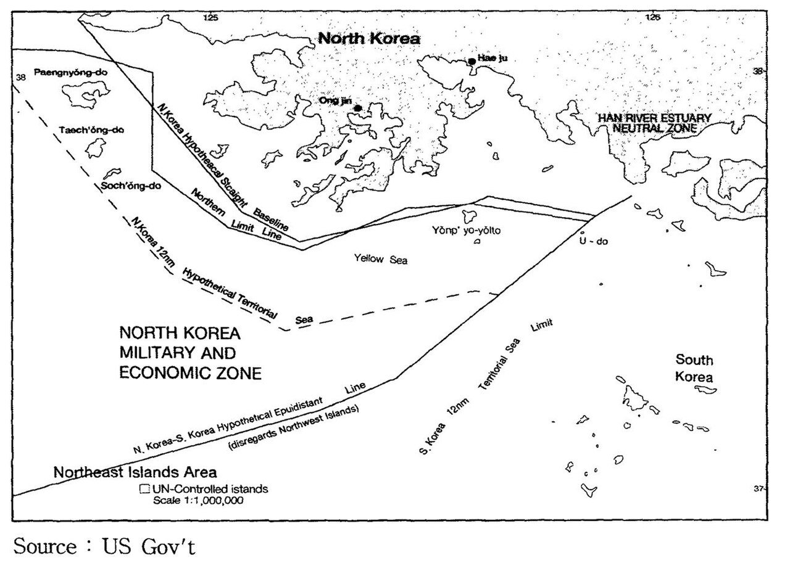
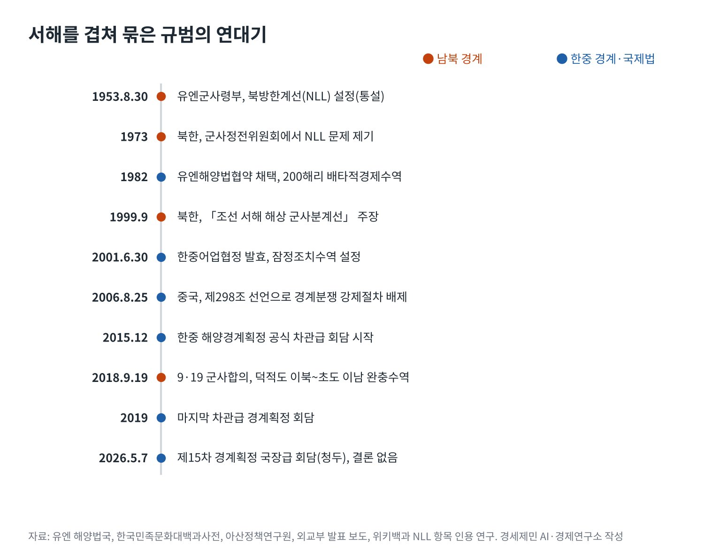

[서해평화 가능한가②] 모순의 바다, 법적 지위가 충돌하는 서해
유엔해양법협약·한중어업협정·북방한계선, 한 바다에 겹친 세 규범
잠정조치수역은 기국주의, 구조물을 막는지는 해석이 갈려
한중 경계획정 15차 회담에도 중간선 대 형평 평행선
AI경제저널=김갑봉 기자 | 서해에는 선이 여럿 있지만 모두가 인정하는 선은 없다. 한중 사이에는 배타적경제수역(EEZ) 경계가 없다. 남북 사이의 북방한계선(NLL)은 북한이 인정하지 않는다. 그 사이를 2001년 한중어업협정이 임시로 메우고 있다.
세 규범은 만든 시기도, 다루는 대상도 다르다. 유엔해양법협약(UNCLOS)은 바다의 권리를, 어업협정은 물고기를, NLL은 군사 충돌을 다룬다. 한 바다에서 겹치는 세 규범이 서로의 빈칸을 드러낸다.
한중은 5월 7일 청두에서 제15차 해양경계획정 국장급 회담을 열었지만 결론을 내지 못했다. 2015년 공식 협상을 시작한 지 11년이다. 선이 없는 시간이 길어질수록 빈칸을 먼저 채우려는 시도가 는다.
유엔해양법협약이 그린 바다
1982년 채택한 유엔해양법협약은 연안국에 200해리 EEZ를 준다. 연안국은 그 안에서 자원 탐사와 개발에 주권적 권리를 갖고, 인공섬과 시설, 구조물의 설치와 이용에 관할권을 갖는다. 제56조와 제60조의 내용이다.

문제는 서해의 폭이다. 서해는 가장 넓은 곳도 400해리가 되지 않는다. 두 나라가 200해리를 주장하면 가운데가 겹친다. 협약 제74조 1항은 마주 보는 나라의 EEZ 경계를 국제법에 따라 합의로 정해 형평한 해결에 이르라고 규정한다.
합의가 없는 동안의 규칙은 제74조 3항이다. 두 나라는 실용적 잠정약정을 맺도록 노력하고 과도기에 최종 합의를 위태롭게 하거나 방해하지 말아야 한다. 잠정약정은 최종 경계에 영향을 주지 않는다.
잠정조치수역, 어업협정이 남긴 빈칸
한중어업협정은 그 잠정약정에 해당한다. 1998년 11월 가서명하고 2000년 8월 3일 서명해 2001년 6월 30일 발효했다. 겹치는 바다 가운데에 잠정조치수역을 두고 어업공동위원회가 함께 관리한다.
잠정조치수역의 단속은 기국주의를 따른다. 각국은 자국 어민과 어선만 단속할 수 있다. 한국 해경이 이 수역에서 중국 어선을 직접 처벌할 수 없는 이유다. 아산정책연구원과 뉴시스 보도가 같은 설명을 내놨다.
빈칸은 구조물에서 드러난다. 미국 전략국제문제연구소(CSIS)의 빅터 차 한국석좌와 인도 마노하르 파리카르 국방연구분석원(MP-IDSA)은 협정이 수역 안 영구 시설을 금지한다고 본다.
국내 해석은 더 신중하다. 아산정책연구원 심상민 선임연구위원은 협정이 어업만 규율한다며 설치 자체를 명백한 위반으로 보긴 어렵다고 분석했다. 중국 외교부는 2025년 4월 21일 양식 시설이 한중 합의에 어긋나지 않는다고 밝혔다.
같은 협정을 두고 한쪽은 금지, 한쪽은 허용을 읽는다. 어업을 위해 만든 잠정약정에 양식장과 관리 플랫폼이라는 새 문제가 들어왔다. 협정은 물고기의 질서를 정했지 바다 위 시설의 질서를 정하지 않았다.
북방한계선, 70년의 실효와 논란
서해 북쪽에는 또 다른 선이 있다. 통설은 1953년 8월 30일 유엔군사령부가 NLL을 정했다고 본다. 다만 위키백과가 인용한 연구들을 보면 설정 원문서는 아직 발견되지 않았다. 정전협정에는 해상 경계가 없다.
북한은 1973년 군사정전위원회 제346차 회의에서 NLL 문제를 제기했다. 1999년 9월에는 더 남쪽에 「조선 서해 해상 군사분계선」을 주장했다. 1999년과 2002년 연평해전, 2009년 대청해전이 이 바다에서 났다.
한국 국방부는 1992년 발효한 남북기본합의서가 NLL을 확인했다고 본다. 2018년 9·19 군사합의는 서해 덕적도 이북에서 초도 이남까지를 완충수역으로 정했다. 이 합의는 2023년 11월 이후 남북 모두에서 효력이 멈췄다.
한중 경계와 남북 경계는 한 점에서 만난다. 코리아중앙데일리와 독일 프리드리히 나우만 재단은 중국이 1962년 북한과 맺은 국경조약을 근거로 동경 124도선을 해양 경계로 주장한다고 전했다. 이 선은 한국이 보는 EEZ 안으로 들어온다.

중간선 대 형평, 11년 협상의 평행선
경계획정의 원칙부터 다르다. 한국은 양쪽 해안에서 같은 거리를 잇는 중간선을 주장한다. 중국은 해안선 길이와 인구, 대륙붕의 자연연장을 고려하는 형평의 원칙을 내세운다. 연합뉴스와 MP-IDSA가 같은 대립을 전했다.
2014년 7월 시진핑 주석 방한 때 두 정상이 경계획정 협상 개시에 합의했다. 2015년 12월 첫 공식 차관급 회담이 서울에서 열렸다. 차관급 회담은 2019년을 끝으로 멈췄고 국장급 회담만 이어졌다.
올해 1월 5일 베이징 정상회담에서 두 나라는 차관급 회담을 올해 안에 재개하기로 했다. 5월 청두 회담 뒤 한국 외교부는 상호 이해를 높였다고 했고, 중국 외교부는 솔직한 의견을 교환했다고 밝혔다.
법정은 대안이 되기 어렵다. 중국은 2006년 8월 25일 유엔해양법협약 제298조 선언으로 해양경계 분쟁을 강제 분쟁해결 절차에서 뺐다. 아산정책연구원은 두 나라가 합의할 때만 국제사법재판소(ICJ)에 갈 수 있다고 분석했다.
모순을 줄이는 길
모순을 당장 풀 수는 없어도 줄일 수는 있다. 해양수산부는 6월 중국 해경국과 실무회의를 열어 10월 초 잠정조치수역 경계선에서 20해리 안쪽을 열흘간 함께 순찰하기로 했다. 불법조업 증거 공유도 늘린다.
9월 21일 톈진 제4차 해양협력대화에서 두 나라는 잠정조치수역의 수색구조 훈련과 어린 물고기 공동 방류를 논의했다. 구조물 문제는 상호 존중의 정신으로 계속 협의하기로 했지만 합의는 없었다.
이재명 대통령은 1월 7일 상하이에서 잠정조치수역 안에도 선을 그어 각자 쓰자는 구상을 밝혔다. 그는 서해에 두 나라 각자의 수역이 있고 가운데 공동관리 수역이 있다고 설명했다. 빈칸을 줄이자는 제안이다.
서해는 세 규범이 저마다의 빈칸을 남긴 바다다. 어업협정은 시설을, NLL은 국제적 승인을, 해양법협약은 경계를 남겨 뒀다. 빈칸을 힘으로 채우게 두면 모순이 커진다. 협상으로 채워야 모순이 줄어든다.
참고문헌
기관 자료
- United Nations, 「United Nations Convention on the Law of the Sea, Part V Exclusive Economic Zone」(제56·60·74조). https://www.un.org/depts/los/convention_agreements/texts/unclos/part5.htm
- United Nations Division for Ocean Affairs and the Law of the Sea, 「Declarations and Statements」(중국 선언 일자 2006년 8월 25일). https://www.un.org/depts/los/convention_agreements/convention_declarations.htm
- Ministry of Foreign Affairs of the People's Republic of China, "Foreign Ministry Spokesperson Guo Jiakun's Regular Press Conference on April 21, 2025", 2025년 4월 21일. https://www.mfa.gov.cn/mfa_eng/xw/fyrbt/202504/t20250421_11600794.html
- 해양수산부, 「한-중 어업협정 수역 내 불법조업 근절을 위한 양국 협력 강화 합의」, 2026년 7월 1일(KDI 경제정보센터 게재). https://eiec.kdi.re.kr/policy/materialView.do?num=283649
- 한국학중앙연구원, 「한중어업협정」, 『한국민족문화대백과사전』. https://encykorea.aks.ac.kr/Article/E0073389
- Korea.net, "President Lee proposes solution to sea border row with China"(GlobalSecurity 전재), 2026년 1월 8일. https://www.globalsecurity.org/wmd/library/news/rok/2026/rok-260108-koreanet01.htm
연구 논문과 보고서
- 심상민, 「중국 서해 구조물 설치의 국제법적 검토」, 아산정책연구원 이슈브리프 2025-13, 2025년 4월 30일. https://www.asaninst.org/wp-content/themes/twentythirteen/action/dl.php?id=99052
- Victor Cha, "Creeping Sovereignty? China's Maritime Structures in the Yellow Sea(West Sea)", CSIS Beyond Parallel, 2025년 12월 9일. https://beyondparallel.csis.org/creeping-sovereignty-chinas-maritime-structures-in-the-yellow-sea-west-sea/
- Abhay Kumar Singh, "The Yellow Sea Dispute: Provisional Arrangements and Persistent Deadlock", MP-IDSA Issue Brief, 2026년 1월 22일. https://idsa.in/publisher/issuebrief/the-yellow-sea-dispute-provisional-arrangements-and-persistent-deadlock
- Wikipedia, "Northern Limit Line"(Roehrig 2011, Elferink 1994, Van Dyke 외 2003, 국방부 2002 인용). https://en.wikipedia.org/wiki/Northern_Limit_Line
- Wikipedia, "North Korea–South Korea relations"(9·19 군사합의 효력 정지 항목). https://en.wikipedia.org/wiki/North_Korea–South_Korea_relations
- Wikipedia, "Pyongyang Joint Declaration of September 2018"(서해 완충수역 항목, 연합뉴스 2018년 11월 1일 인용). https://en.wikipedia.org/wiki/Pyongyang_Joint_Declaration_of_September_2018
언론 보도
- 박준호, "한중 어업협정상 기국주의 적용…타국 국민·어선에 대한 단속 못해", 뉴시스, 2025년 5월 6일. https://mobile.newsis.com/view/NISX20250502_0003162802
- Korea JoongAng Daily, 한중 서해 철골 구조물 분쟁 해설 기사(지면 2025년 4월 30일). https://www.koreajoongangdaily.com/korea/10514945
- Frederic Spohr, "China Expands in the Yellow Sea", Friedrich Naumann Foundation for Freedom, 2025년 5월 13일. https://www.freiheit.org/north-and-south-korea/china-expands-yellow-sea
- 장영은, "한중, 22일 해양경계획정 차관급 회담 개최(종합)", 이데일리, 2015년 12월 14일. https://edaily.co.kr/News/Read?mediaCodeNo=257&newsId=03840886609598520
- 연합뉴스, "S. Korea seeks progress in talks with China on maritime demarcation, steel structures", The Korea Herald, 2026년 1월 7일. https://www.koreaherald.com/article/10650354
- 다음뉴스, "한·중, 청두서 15차 해양경계획정 국장급 회담 개최…결론 아직", 2026년 5월 7일. https://v.daum.net/v/20260507191252118
- SPN 서울평양뉴스, "한중 해양경계획정 회담…'솔직한 의견 교환'", 2026년 5월 8일. https://www.spnews.co.kr/news/articleView.html?idxno=107025
- 해사신문, "한중, 서해 구조물 다시 테이블에…中 '순수 양식시설' 되풀이", 2026년 9월 22일. http://www.haesanews.com/news/articleView.html?idxno=151332
[사진 출처]
- [사진1] US Government, "12nm hypothetical Territorial Sea compared with Northern Limit Line, North Korea.jpg", 위키미디어 공용, 퍼블릭 도메인. https://commons.wikimedia.org/wiki/File:12nm_hypothetical_Territorial_Sea_compared_with_Northern_Limit_Line,_North_Korea.jpg
※ 이 기사는 AI 프로그램 클로드를 활용해 작성했습니다.
관련기사
- [서해평화 가능한가①] 중국의 서해 구조물이 노리는 서해 지도
- [서해평화 가능한가③] 권력 공백기 노린 중국과 북한의 서해 전략
- [서해평화 가능한가④] 중국의 속내, 서해를 내해로
- [서해평화 가능한가⑤] 북한의 계산, 생존에서 협상력까지
저작권자 © AI경제저널 무단전재 및 재배포, AI학습 및 활용 금지